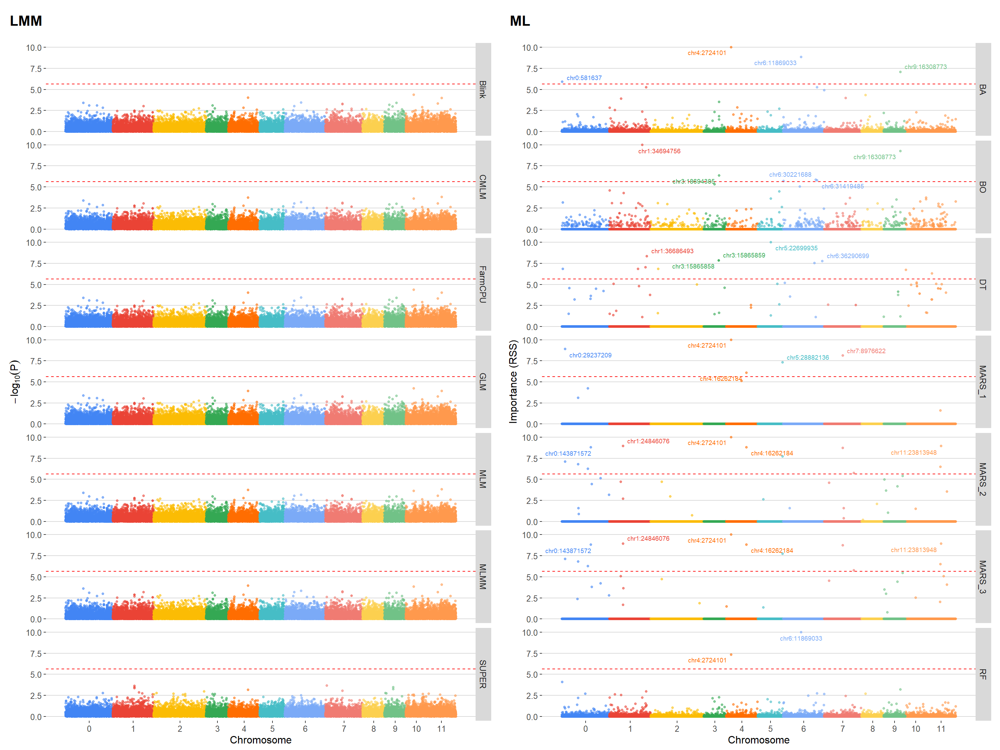

Last updated: 2025-12-16
Checks: 6 1
Knit directory:
Importance-of-markers-for-QTL-detection-by-machine-learning-methods/
This reproducible R Markdown analysis was created with workflowr (version 1.7.2). The Checks tab describes the reproducibility checks that were applied when the results were created. The Past versions tab lists the development history.
The R Markdown is untracked by Git. To know which version of the R
Markdown file created these results, you’ll want to first commit it to
the Git repo. If you’re still working on the analysis, you can ignore
this warning. When you’re finished, you can run
wflow_publish to commit the R Markdown file and build the
HTML.
Great job! The global environment was empty. Objects defined in the global environment can affect the analysis in your R Markdown file in unknown ways. For reproduciblity it’s best to always run the code in an empty environment.
The command set.seed(20221222) was run prior to running
the code in the R Markdown file. Setting a seed ensures that any results
that rely on randomness, e.g. subsampling or permutations, are
reproducible.
Great job! Recording the operating system, R version, and package versions is critical for reproducibility.
Nice! There were no cached chunks for this analysis, so you can be confident that you successfully produced the results during this run.
Great job! Using relative paths to the files within your workflowr project makes it easier to run your code on other machines.
Great! You are using Git for version control. Tracking code development and connecting the code version to the results is critical for reproducibility.
The results in this page were generated with repository version 5578ce8. See the Past versions tab to see a history of the changes made to the R Markdown and HTML files.
Note that you need to be careful to ensure that all relevant files for
the analysis have been committed to Git prior to generating the results
(you can use wflow_publish or
wflow_git_commit). workflowr only checks the R Markdown
file, but you know if there are other scripts or data files that it
depends on. Below is the status of the Git repository when the results
were generated:
Ignored files:
Ignored: .Rproj.user/
Ignored: analysis/GWAS.Rmd
Ignored: analysis/figure/
Ignored: analysis/gwas-GLM.Rmd
Ignored: output/DP_heatmap.tiff
Ignored: output/F1_Score_heatmap.tiff
Ignored: output/FP_heatmap.tiff
Ignored: output/Figure1_Ideogram.tiff
Ignored: output/Precision_heatmap.tiff
Ignored: output/Runtime_Comparison.tiff
Ignored: output/Specificity_heatmap.tiff
Ignored: output/genetic_map.tiff
Ignored: output/ld_decay_plot.tiff
Ignored: output/mod.rda
Ignored: output/real_data_cv/
Untracked files:
Untracked: README.html
Untracked: Tabela_Periodica_RStudio_Full.png
Untracked: analysis/gwas_dados_reais.Rmd
Untracked: data/dados_reais/
Untracked: data/referencia/
Untracked: output/dados_reais/
Untracked: output/gwas_cv/
Untracked: output/ml_cv/
Untracked: output/real_data_full/
Untracked: output/real_data_full_ml/
Unstaged changes:
Modified: analysis/models_gapit_gwas.Rmd
Modified: output/Consolidated_Performance_Metrics.csv
Modified: output/Hits_Errors_Detailed_Table.csv
Modified: output/Runtime_Summary_Table_mean.csv
Note that any generated files, e.g. HTML, png, CSS, etc., are not included in this status report because it is ok for generated content to have uncommitted changes.
There are no past versions. Publish this analysis with
wflow_publish() to start tracking its development.
Este script realiza uma análise de associação genômica ampla (GWAS) utilizando o pacote GAPIT em R. Ele carrega dados fenotípicos e genotípicos reais, prepara os dados para análise e executa modelos de GWAS para cada combinação de traço e modelo especificado. Os resultados são salvos em um arquivo RDS.
# ==============================================================================
# 1. GESTÃO DE INSTALAÇÃO (CRAN)
# ==============================================================================
# Lista de todos os pacotes necessários (sem duplicatas)
pkgs_cran <- c(
"tidyverse", "kableExtra", "doParallel", "foreach",
"ggrepel", "ggthemes", "cowplot", "scales",
"caret", "randomForest", "gbm", "earth", "rpart", "sommer"
)
# Instala apenas os que não estiverem presentes
ins_pkgs <- pkgs_cran[!(pkgs_cran %in% installed.packages()[, "Package"])]
if (length(ins_pkgs) > 0) install.packages(ins_pkgs)
# Nota: GAPIT deve ser instalado via GitHub ou fonte externa se necessário
if (!require("GAPIT", quietly = TRUE)) {
# source("http://zzlab.net/GAPIT/gapit_functions.txt") # Exemplo de instalação clássica
# Ou instale via GitHub se preferir
}
# ==============================================================================
# 2. CARREGAMENTO POR CATEGORIAS
# ==============================================================================
# --- GWAS e Genética Quantitativa ---
library(GAPIT) # Análise de GWAS (Blink, FarmCPU, SUPER)
library(sommer) # Modelos Mistos e Decaimento de LD
# --- Machine Learning (Aprendizado de Máquina) ---
library(caret) # Framework unificado para ML
library(randomForest) # Random Forest e Bagging
library(gbm) # Gradient Boosting Machine
library(earth) # Multivariate Adaptive Regression Splines (MARS)
library(rpart) # Decision Trees
# --- Processamento Paralelo ---
library(doParallel) # Interface para processamento paralelo
library(foreach) # Estrutura de loop paralelizável
# --- Visualização e Relatórios ---
library(kableExtra) # Tabelas profissionais (PDF/HTML)
library(cowplot) # Combinação de múltiplos gráficos
library(ggrepel) # Rótulos que não se sobrepõem
library(ggthemes) # Temas extras (theme_hc, etc.)
library(scales) # Formatação de escalas e paletas (gdocs_pal)
# --- Manipulação de Dados ---
library(tidyverse) # Core (dplyr, ggplot2, tidyr, etc.)Os dados fenotípicos e genotípicos são carregados a partir de arquivos RDS. Certifique-se de que os arquivos estão no diretório correto.
# Carrega os dados de genótipos e fenótipos
pheno <- readRDS(file = "data/dados_reais/pheno_real.rds")
head(pheno)# A tibble: 6 × 3
ID Prod.Cor genotipo
<dbl> <dbl> <chr>
1 1 6.37 PROG 1_1
2 10 3.45 PROG 1_10
3 11 7.03 PROG 1_11
4 12 -1.65 PROG 1_12
5 13 -0.350 PROG 1_13
6 14 10.3 PROG 1_14 CAonly_Contig15745:814-1134:165 CAonly_Contig2698:0-267:74
PROG 1_1 0 0
PROG 1_10 -1 0
PROG 1_11 -1 0
PROG 1_12 -1 0
PROG 1_13 -1 0
CAonly_Contig2698:0-267:88 CAonly_Contig2698:0-267:110
PROG 1_1 0 0
PROG 1_10 0 0
PROG 1_11 0 0
PROG 1_12 0 0
PROG 1_13 0 0
CAonly_Contig2698:0-267:125
PROG 1_1 -1
PROG 1_10 -1
PROG 1_11 -1
PROG 1_12 0
PROG 1_13 -1 V1 V2 pos n_markers
1 CAonly_Contig15745:814-1134 165 CAonly_Contig15745:814-1134:165 1
2 CAonly_Contig2698:0-267 74 CAonly_Contig2698:0-267:74 2
3 CAonly_Contig2698:0-267 88 CAonly_Contig2698:0-267:88 3
4 CAonly_Contig2698:0-267 110 CAonly_Contig2698:0-267:110 4
5 CAonly_Contig2698:0-267 125 CAonly_Contig2698:0-267:125 5
6 CAonly_Contig2698:0-267 150 CAonly_Contig2698:0-267:150 6Precisamos garantir que os dados fenotípicos e genotípicos estejam no formato correto para a análise. Isso inclui a conversão de colunas para tipos numéricos e a criação de identificadores únicos.
# 1) Certifique‑se de que o seu data.frame de fenótipos
# tem a coluna 'genotipo' e depois só colunas numéricas:
pheno <- pheno %>%
# transforma tudo, exceto 'genotipo', em numeric
mutate(across(-genotipo, ~ as.numeric(as.character(.))))
# 2) Mesma ideia para geno
geno <- geno %>%
mutate(across(where(is.numeric), as.integer))
# 3) Cria GD com ID e seleciona as colunas de genótipo
GD <- geno %>%
# 1) Cria a coluna ID
mutate(Taxa = rownames(geno)) %>%
# 2) Seleciona apenas ID + todas as colunas cujo nome contém "chr"
select(Taxa, matches("chr"))
GD[1:5,1:5] Taxa chr0:24844 chr0:24881 chr0:24905 chr0:24916
PROG 1_1 PROG 1_1 0 0 0 -1
PROG 1_10 PROG 1_10 0 0 0 -1
PROG 1_11 PROG 1_11 0 0 0 -1
PROG 1_12 PROG 1_12 1 0 0 -1
PROG 1_13 PROG 1_13 1 -1 0 -1# 4) Prepare o GM
GM <- pos_geno %>%
mutate(
SNP = pos,
chr = as.integer(str_extract(V1, "\\d+")),
pos = V2
) %>%
select(SNP, chr, pos) %>%
distinct() %>%
filter(SNP %in% names(GD)) %>%
arrange(SNP)
head(GM) SNP chr pos
1 chr0:100000044 0 100000044
2 chr0:100000045 0 100000045
3 chr0:100000085 0 100000085
4 chr0:100000117 0 100000117
5 chr0:100000132 0 100000132
6 chr0:100677213 0 100677213Para realizar a análise de desequilíbrio de ligação (LD) entre os marcadores, precisamos preparar os dados genotípicos e o mapa de marcadores.
Converta os dados de genótipo para o formato de matriz e prepare o mapa de marcadores, garantindo que as colunas estejam no tipo correto.
# Convert genotype data to matrix format
# Remove the first column (ID) and convert to matrix
CPgeno <- as.matrix(GD[-1])
CPgeno[1:5,1:5] chr0:24844 chr0:24881 chr0:24905 chr0:24916 chr0:231736
PROG 1_1 0 0 0 -1 0
PROG 1_10 0 0 0 -1 0
PROG 1_11 0 0 0 -1 0
PROG 1_12 1 0 0 -1 0
PROG 1_13 1 -1 0 -1 0# Load and prepare map data
mapCP <- GM %>%
mutate(Locus = SNP, # Ensure SNP column is character type
Position = as.numeric(pos), # Ensure pos column is numeric type
LG = as.integer(chr) + 1) %>% # Ensure chr column is integer type
select(Locus, Position, LG) %>%
filter(Locus %in% colnames(CPgeno)) # Filter to include only markers present in CPgeno
head(mapCP) Locus Position LG
1 chr0:100000044 100000044 1
2 chr0:100000045 100000045 1
3 chr0:100000085 100000085 1
4 chr0:100000117 100000117 1
5 chr0:100000132 100000132 1
6 chr0:100677213 100677213 1Obtenha os grupos de ligação únicos e aplique uma função para
calcular o decaimento do LD para cada grupo de ligação. A função
LD.decay do pacote sommer é utilizada para
calcular o decaimento do LD.
[1] 1 2 3 4 5 6 7 8 9 10 11 12O objeto res contém os resultados do decaimento do LD
para cada grupo de ligação, filtrados por pares de marcadores
significativos após correção de Bonferroni.
res <- lapply(unique_LGs, function(lg) {
# Step 2a: For the current linkage group 'lg', extract the corresponding marker names
markers <- mapCP %>%
filter(LG == lg) %>% # Filter the map data to include only rows where LG equals the current linkage group
pull(Locus) # Extract the 'Locus' column, which contains marker names
# Step 2b: Perform Linkage Disequilibrium (LD) decay analysis on the genotype data for these markers
LDDecay <- LD.decay(CPgeno[, markers], # Subset the genotype matrix to include only the columns for the current markers
mapCP %>% filter(LG == lg)) # Subset the map data to include only the current linkage group
# Step 2c: Filter the LD results to include only significant marker pairs after Bonferroni correction
A <- LDDecay$all.LG %>% # Access the LD results for all marker pairs
filter(p < 0.05 / choose(length(markers), 2)) # Apply Bonferroni correction to adjust the p-value threshold
# Step 2d: Check if there are any significant marker pairs
if (nrow(A) > 0) {
# If significant pairs exist, create a data frame including the linkage group identifier
data.frame(GL = paste0("lg", lg), # Add a column 'GL' with the linkage group name (e.g., 'lg1', 'lg2', etc.)
A) # Include the filtered LD decay results
} else {
# If no significant pairs are found, return NULL for this linkage group
NULL
}
})
# Save res
saveRDS(res, "output/res.RDS")O objeto dados será o conjunto de dados final contendo
os resultados do decaimento do LD, com as colunas d
(distância entre os marcadores em par de bases) e r2
(coeficiente de determinação). A coluna GL indica o grupo
de ligação ao qual os marcadores pertencem.
res <- res[!sapply(res, is.null)]
dados <- do.call(rbind, res)
dados$GL <- as.factor(dados$GL)
head(dados) GL d r2 p
1 lg1 0 1.0000000 0.000000e+00
2 lg1 1 0.7731250 0.000000e+00
3 lg1 0 1.0000000 0.000000e+00
4 lg1 41 0.3454594 2.220446e-16
5 lg1 40 0.3476557 2.220446e-16
6 lg1 0 1.0000000 0.000000e+00Ajuste o modelo de perda de LD usando uma regressão local (loess) para prever o decaimento do LD em função da distância entre os marcadores.
Prepare uma sequência de distâncias para prever o decaimento do LD
usando o modelo ajustado. A sequência é criada com base nos valores
mínimos e máximos de distância (d) encontrados nos
dados.
# Usa grid reduzido para evitar alocação grande
n_points <- 1000
d_min <- min(dados$d)
d_max <- max(dados$d)
d_seq <- seq(d_min, d_max, length.out = n_points)[-1]Preveja o decaimento do LD usando o modelo ajustado e salve os
resultados em um arquivo RDS. O objeto data_pred conterá as
distâncias e as previsões correspondentes.
pred <- predict(mod, d_seq)
data_pred <- data.frame(d = d_seq, pred = pred)
head(data_pred)
saveRDS(data_pred, file = "output/dados_reais/pred_mod.RDS")Encontre a distância mais próxima do valor alvo de r² (0.8) e
armazena essa distância em closest_d. A função
which.min é utilizada para encontrar o índice da distância
mais próxima.
target_r2 <- 0.8
closest_index <- which.min(abs(data_pred$pred - target_r2))
closest_d <- d_seq[closest_index]
closest_d[1] 205381.6Definimos um limiar de LD de 0.8 e obtivemos que a distância de decaimento é aproximadamente 2.0538156^{5}, em par de bases.
Os modelos GAPIT a serem avaliados são definidos, e os dados fenotípicos e genotípicos são preparados para a análise de associação genômica ampla (GWAS).
Os modelos GLM (General Linear Model), MLM (Mixed Linear Model), CMLM (Compressed Mixed Linear Model), MLMM (Multi-Locus Mixed Model), SUPER (SNP Unbiased Epistatic Regression), FarmCPU (Fixed and Random Model Circulating Probability Unification) e Blink (Bayesian Linear Regression) são utilizados para realizar a análise de associação genômica. O GAPIT é um pacote amplamente utilizado em estudos de GWAS, pois permite a análise eficiente de grandes conjuntos de dados genômicos e fenotípicos.
# Definir modelos do GAPIT a serem avaliados
models_gwas <- c("GLM", "MLM", "CMLM", "MLMM", "SUPER", "FarmCPU", "Blink")Para executar a análise de GWAS em paralelo, utilizamos o pacote
doParallel para configurar um cluster que permite a
execução simultânea de múltiplas análises. Isso acelera
significativamente o processo, especialmente quando lidamos com grandes
conjuntos de dados e múltiplos modelos.
O objeto results_cv_GAPIT armazenará os resultados de
todas as análises de GWAS, organizados por trait e modelo. Cada iteração
do loop executa o GAPIT para uma combinação específica de trait e
modelo, prepara os dados fenotípicos e genotípicos, e extrai os
resultados da análise.
# ==============================================================================
# GWAS REAL DATA - FULL DATASET ANALYSIS (NO CV)
# ==============================================================================
# 1. Configuração e Dados
# -----------------------
# Carregue seus dados (GD, GM, pheno) se ainda não estiverem na memória
# load("data/dados_reais_processados.RData")
# Verificação básica de nomes
if(!exists("pheno") || !exists("GD") || !exists("GM")) stop("Carregue pheno, GD e GM antes.")
# Lista de Traits (Assumindo que Col 1 é ID)
traits_list <- traits
# Lista de Modelos (Incluindo SUPER e BLINK)
models_list <- c("GLM", "MLM", "CMLM", "MLMM", "FarmCPU", "Blink", "SUPER")
# Diretórios de Saída
base_out_dir <- "output/real_data_full"
temp_run_dir <- file.path(base_out_dir, "temp_runs")
if (!dir.exists(temp_run_dir)) dir.create(temp_run_dir, recursive = TRUE)
# 2. Configuração do Cluster
# --------------------------
n_cores_total <- parallel::detectCores()
# SUPER consome muita memória, então se tiver pouca RAM, reduza os cores.
n_cores_use <- max(1, n_cores_total - 1)
if(exists("cl")) stopCluster(cl)
cl <- makeCluster(n_cores_use)
registerDoParallel(cl)
cat("Cluster iniciado com", n_cores_use, "núcleos.\n")
# 3. Execução Paralela
# --------------------
# Grid apenas de Trait x Modelo (Sem Reps ou Folds)
task_grid <- expand.grid(
Trait = traits_list,
Model = models_list,
stringsAsFactors = FALSE
)
cat(sprintf("Iniciando GWAS Full. Total de Análises: %d\n", nrow(task_grid)))
main_wd <- getwd()
foreach(task_i = 1:nrow(task_grid),
.packages = c("GAPIT", "tidyverse"),
.export = c("pheno", "GD", "GM", "base_out_dir", "temp_run_dir", "main_wd")) %dopar% {
curr_trait <- task_grid$Trait[task_i]
curr_model <- task_grid$Model[task_i]
# A. Preparar Pasta Específica
folder_name <- paste0("Trait_", curr_trait, "_M_", curr_model)
task_dir <- file.path(main_wd, temp_run_dir, folder_name)
# Pula se já rodou
if (file.exists(file.path(task_dir, "GAPIT.Association.GWAS_Results.csv"))) return(NULL)
if (!dir.exists(task_dir)) dir.create(task_dir, recursive = TRUE)
setwd(task_dir)
tryCatch({
# B. Preparar Fenótipo (Y) - Usando TODOS os dados
# Seleciona apenas ID e o Trait atual
Y_full <- pheno %>%
select(genotipo, all_of(curr_trait)) %>%
rename(Taxa = 1, Trait = 2) %>%
mutate(Trait = as.numeric(as.character(Trait))) %>%
drop_na() %>% # Remove NAs se houver
as.data.frame()
# GD e GM são passados completos. O GAPIT faz a interseção de IDs automaticamente.
# C. Rodar GAPIT
start_time <- Sys.time()
capture.output({
GAPIT(
Y = Y_full,
GD = GD,
GM = GM,
model = curr_model,
PCA.total = 3,
file.output = TRUE, # Salva Manhattan, QQ-plots e CSVs
group.from = 1,
group.to = nrow(Y_full),
kinship.algorithm = "VanRaden",
SNP.P3D = TRUE
)
})
end_time <- Sys.time()
exec_time <- as.numeric(difftime(end_time, start_time, units = "secs"))
# Salvar tempo de execução (opcional)
write.csv(data.frame(Trait=curr_trait, Model=curr_model, Time=exec_time),
"runtime_info.csv", row.names=FALSE)
}, error = function(e) {
writeLines(as.character(e), "error.log")
})
setwd(main_wd)
return(NULL)
}
stopCluster(cl)
cat("Análise Full Dataset concluída.\n")# ==============================================================================
# CONSOLIDAÇÃO - DADOS REAIS (FULL DATASET)
# ==============================================================================
base_runs_dir <- "output/real_data_full/temp_runs"
final_output_dir <- "output/dados_reais"
output_file_path <- file.path(final_output_dir, "gwas_results_full.rds")
# Lista arquivos
files <- list.files(base_runs_dir, pattern = "GAPIT.Association.GWAS_Results.*\\.csv", recursive = TRUE, full.names = TRUE)
if(length(files) > 0) {
process_full_file <- function(f) {
tryCatch({
dir_name <- basename(dirname(f))
file_name <- basename(f)
# Extrair Trait e Model do nome da pasta: "Trait_{X}_M_{Y}"
trait_val <- str_match(dir_name, "Trait_(.*?)_M_")[,2]
model_val <- str_match(dir_name, "_M_(.*)")[,2] # Pega tudo depois de _M_
# Ajuste Kansas/NYC/SUPER
final_model_name <- model_val
if (!is.na(model_val) && model_val %in% c("Blink", "FarmCPU")) {
if (grepl("NYC", file_name, ignore.case = TRUE)) final_model_name <- paste0(model_val, ".NYC")
}
df <- read.csv(f)
if (nrow(df) == 0) return(NULL)
colnames(df) <- tolower(colnames(df))
p_col <- grep("^p\\.val", colnames(df), value = TRUE)[1]
if (is.na(p_col)) return(NULL)
df %>%
select(
SNP = any_of(c("snp", "marker", "rs")),
Chr = any_of(c("chromosome", "chr")),
Pos = any_of(c("position", "pos")),
P.value = all_of(p_col),
MAF = any_of(c("maf")),
Effect = any_of(c("effect"))
) %>%
mutate(
Trait = trait_val,
Model = final_model_name,
LogP = -log10(pmax(P.value, 1e-300))
)
}, error = function(e) return(NULL))
}
cat("Consolidando resultados...\n")
full_results <- map_dfr(files, process_full_file)
# Filtro opcional NYC e Salvamento
full_results <- full_results %>% filter(!grepl("NYC", Model))
saveRDS(full_results, output_file_path)
cat("Arquivo salvo em:", output_file_path, "\n")
} else {
cat("Nenhum resultado encontrado.\n")
}Consolidando resultados...
Arquivo salvo em: output/dados_reais/gwas_results_full.rds Para calcular a importância dos marcadores SNP nos modelos de machine learning, utilizamos os resultados de validação cruzada (CV) de cada modelo obtidos pelo script de GWS no passo anterior.
A função flatten_importance é responsável por ler os
arquivos de resultados, extrair as importâncias e adicionar metadados
relevantes como Trait, Rep, Fold e model.
# ==============================================================================
# ML REAL DATA - FULL DATASET ANALYSIS (MARKER DISCOVERY)
# ==============================================================================
# 1. Configuração e Dados
# -----------------------
# Carregue seus dados reais aqui (GD e Pheno) se ainda não estiverem carregados
# load("data/dados_reais_processados.RData")
# Verificações básicas
if(!exists("pheno") || !exists("GD")) stop("Objetos 'pheno' e 'GD' necessários.")
# Lista de Traits (Assume que a coluna 1 é o ID e o resto são traits)
traits_list <- "Prod.Cor" # Adapte conforme necessário
# Lista de Modelos ML
ml_models <- c("DT", "RF", "BA", "BO", "MARS_1", "MARS_2", "MARS_3")
# Diretórios
base_out_dir <- "output/real_data_full_ml"
temp_run_dir <- file.path(base_out_dir, "temp_runs")
if (!dir.exists(temp_run_dir)) dir.create(temp_run_dir, recursive = TRUE)
# 2. Configuração do Cluster
# --------------------------
# ATENÇÃO: ML consome muita RAM. Se tiver pouca memória, reduza os cores.
n_cores_total <- parallel::detectCores()
n_cores_use <- max(1, floor(n_cores_total / 2)) # Conservador para evitar crash
if(exists("cl")) stopCluster(cl)
cl <- makeCluster(n_cores_use)
registerDoParallel(cl)
cat("Cluster ML iniciado com", n_cores_use, "núcleos.\n")
# 3. Grid de Tarefas
# ------------------
task_grid <- expand.grid(
Trait = traits_list,
Model = ml_models,
stringsAsFactors = FALSE
)
cat(sprintf("Iniciando ML Full. Total de Análises: %d\n", nrow(task_grid)))
main_wd <- getwd()
# 4. Loop Paralelo
# ----------------
foreach(task_i = 1:nrow(task_grid),
.packages = c("tidyverse", "caret", "randomForest", "gbm", "earth", "rpart"),
.export = c("pheno", "GD", "base_out_dir", "temp_run_dir", "main_wd")) %dopar% {
curr_trait <- task_grid$Trait[task_i]
curr_model <- task_grid$Model[task_i]
# A. Preparar Pasta
folder_name <- paste0("Trait_", curr_trait, "_Model_", curr_model)
task_dir <- file.path(main_wd, temp_run_dir, folder_name)
# Pula se já foi feito
if (file.exists(file.path(task_dir, "ML_Importance.csv"))) return(NULL)
if (!dir.exists(task_dir)) dir.create(task_dir, recursive = TRUE)
setwd(task_dir)
tryCatch({
# B. Preparar Dados (Matching IDs)
# --------------------------------
# Assume que a Coluna 1 de ambos é o ID (Taxa)
ids_pheno <- as.character(pheno$genotipo)
ids_geno <- as.character(GD[,1])
common_ids <- intersect(ids_pheno, ids_geno)
# Subset Pheno (Y)
y_df <- pheno %>%
filter(pheno$genotipo %in% common_ids) %>%
arrange(match(pheno$genotipo, common_ids))
# Extrai vetor numérico do trait atual
y_vec <- as.numeric(y_df[[curr_trait]])
# Subset Genotype (X)
X_df <- GD %>%
filter(GD[,1] %in% common_ids) %>%
arrange(match(GD[,1], common_ids)) %>%
select(-1) # Remove coluna ID
X_mat <- as.matrix(X_df)
# C. Ajustar Modelos e Extrair Importância
# ----------------------------------------
imp_df <- NULL
if (curr_model == "RF") {
# Random Forest
fit <- randomForest(y=y_vec, x=X_df, ntree = 500, mtry = floor(ncol(X_df)/3))
# varImp do caret chama importance() internamente
raw_imp <- varImp(fit, value = "rss")
imp_df <- data.frame(Marker = rownames(raw_imp), Importance = raw_imp$Overall)
} else if (curr_model == "BA") {
# Bagging (RF com mtry = p)
fit <- randomForest(y=y_vec, x=X_df, ntree = 500, mtry = ncol(X_df))
raw_imp <- varImp(fit, value = "rss")
imp_df <- data.frame(Marker = rownames(raw_imp), Importance = raw_imp$Overall)
} else if (curr_model == "DT") {
# Decision Tree (rpart)
fit <- rpart(y_vec ~ X_mat, method = "anova")
raw_imp <- varImp(fit, value = "rss")
imp_df <- data.frame(Marker = rownames(raw_imp), Importance = raw_imp$Overall)
} else if (curr_model == "BO") {
# Boosting (GBM)
# CORREÇÃO: gbm.fit exige matriz para performance e evitar erros
fit <- gbm.fit(y=y_vec, x= X_mat, distribution = "gaussian",
n.trees = 500, interaction.depth = 2, shrinkage = 0.01, verbose = FALSE)
# varImp para gbm retorna a redução relativa
raw_imp <- varImp(fit, numTrees = 500, value = "rss")
imp_df <- data.frame(Marker = rownames(raw_imp), Importance = raw_imp$Overall)
rm(X_mat); gc() # Limpeza imediata
} else if (curr_model %in% c("MARS_1", "MARS_2", "MARS_3")) {
# MARS (Earth)
# CORREÇÃO CRÍTICA: Converter para matriz para evitar "protect stack overflow"
gc() # Limpeza antes de rodar
degree_val <- as.numeric(sub("MARS_", "", curr_model))
# nk e thresh ajudam a controlar memória
fit <- earth(y_vec ~ X_mat, degree = degree_val)
# varImp no caret para earth usa evimp (nsubsets ou rss)
raw_imp <- varImp(fit, value = "rss")
# O caret às vezes retorna nomes diferentes, garantimos "Overall"
if("Overall" %in% colnames(raw_imp)) {
imp_df <- data.frame(Marker = rownames(raw_imp), Importance = raw_imp$Overall)
} else {
# Fallback se a estrutura for diferente
imp_df <- data.frame(Marker = rownames(raw_imp), Importance = raw_imp[,1])
}
rm(X_mat); gc() # Limpeza imediata
}
# D. Padronização e Salvamento
# ----------------------------
if (!is.null(imp_df) && nrow(imp_df) > 0) {
colnames(imp_df) <- c("Marker", "Overall")
# Salva CSV
write.csv(imp_df, "ML_Importance.csv", row.names = FALSE)
# Salva info de sucesso
write.csv(data.frame(Trait=curr_trait, Model=curr_model, Status="Done"),
"runtime_info.csv", row.names=FALSE)
}
}, error = function(e) {
writeLines(as.character(e), "error.log")
})
setwd(main_wd)
return(NULL)
}
stopCluster(cl)
cat("Análise ML Full concluída.\n")# ==============================================================================
# CONSOLIDAÇÃO - ML REAL DATA
# ==============================================================================
base_runs_dir <- "output/real_data_full_ml/temp_runs"
final_output_dir <- "output/dados_reais"
output_file_path <- file.path(final_output_dir, "ml_results_full.rds")
files <- list.files(base_runs_dir, pattern = "ML_Importance.csv", recursive = TRUE, full.names = TRUE)
if(length(files) > 0) {
cat("Consolidando resultados ML...\n")
process_ml_file <- function(f) {
tryCatch({
dir_name <- basename(dirname(f))
# Extrair Trait e Model: "Trait_{X}_Model_{Y}"
trait_val <- str_match(dir_name, "Trait_(.*?)_Model_")[,2]
model_val <- str_match(dir_name, "_Model_(.*)")[,2]
df <- read.csv(f)
if(nrow(df) == 0) return(NULL)
df %>%
mutate(
Trait = trait_val,
Model = model_val,
# Normalização Min-Max (0 a 100) para facilitar comparação visual
Importance_Norm = scales::rescale(Overall, to = c(0, 10), finite = FALSE)
) %>%
select(Trait, Model, Marker, Overall, Importance_Norm)
}, error = function(e) return(NULL))
}
ml_results <- map_dfr(files, process_ml_file)
ml_results
# Tratamento para MARS/DT (que podem não retornar marcadores zerados)
# Se quiser preencher com zeros para todos os marcadores originais,
# precisaria carregar a lista completa de marcadores aqui.
# Por enquanto, mantemos apenas o que os modelos retornaram.
saveRDS(ml_results, output_file_path)
cat("Arquivo salvo em:", output_file_path, "\n")
} else {
cat("Nenhum arquivo ML encontrado.\n")
}Consolidando resultados ML...
Arquivo salvo em: output/dados_reais/ml_results_full.rds # Passo 1: Definir o universo total de marcadores
# O ideal é pegar do seu arquivo de mapa (GM) ou das colunas do GD.
# Se não tiver eles na memória, pegamos todos os marcadores únicos que apareceram nos resultados.
all_markers_universe <- unique(results_cv_GAPIT$SNP)
# Passo 2: Pipeline de Correção
imp_ML <- imp_ML %>%
na.omit() %>%
# 1. Garante formato correto
ungroup() %>%
mutate(Marker = as.character(Marker),
Marker = str_remove_all(Marker, "X_mat")) %>%
# 2. PREENCHER DADOS FALTANTES (A etapa crucial)
# Para cada combinação de Trait e Model, força a existência de TODOS os marcadores.
# Se o marcador não existia (foi cortado pelo MARS/DT), preenche com 0.
group_by(Trait, Model) %>%
complete(Marker = all_markers_universe, fill = list(Importance_Norm = 0, Overall = 0)) %>%
# 4. Finalização
ungroup() %>%
rename(Effect = Importance_Norm, SNP = Marker)
# Verificação
cat("Total de linhas (deve ser N_Traits x N_Models x N_Markers):", nrow(imp_ML), "\n")Total de linhas (deve ser N_Traits x N_Models x N_Markers): 150998 # A tibble: 6 × 5
Trait Model SNP Overall Effect
<chr> <chr> <chr> <dbl> <dbl>
1 Prod.Cor BA chr0:100000044 0.00136 0.000596
2 Prod.Cor BA chr0:100000045 0 0
3 Prod.Cor BA chr0:100000085 0 0
4 Prod.Cor BA chr0:100000117 0.00315 0.00138
5 Prod.Cor BA chr0:100000132 0.000399 0.000174
6 Prod.Cor BA chr0:100677213 0.0238 0.0104 # Calcular Thresholds Empíricos para ML (Média da Importância)
ml_thresholds <- imp_ML %>%
filter(Effect > 0) %>%
group_by(Model, Trait) %>%
summarise(threshold_val = mean(Effect, na.rm = TRUE), .groups = "drop")
ml_thresholds# A tibble: 7 × 3
Model Trait threshold_val
<chr> <chr> <dbl>
1 BA Prod.Cor 0.0649
2 BO Prod.Cor 0.915
3 DT Prod.Cor 4.11
4 MARS_1 Prod.Cor 6.06
5 MARS_2 Prod.Cor 4.52
6 MARS_3 Prod.Cor 4.94
7 RF Prod.Cor 0.0677Nesta etapa, carregamos os resultados consolidados (GWAS e ML) e preparamos um dataset único. Como os modelos de ML retornam apenas a importância, utilizamos as informações de posição (Cromossomo/Posição) derivadas da análise de GWAS para mapear os marcadores de ML.
# 1. Carregar arquivos RDS gerados na consolidação
gwas_data <- readRDS("output/dados_reais/gwas_results_full.rds")
ml_data <- readRDS("output/dados_reais/ml_results_full.rds")
# 2. Criar Mapa Genético de Referência (baseado no GWAS)
# Extraímos a posição de cada SNP para usar no ML
snp_map <- gwas_data %>%
select(SNP, Chr, Pos) %>%
distinct(SNP, .keep_all = TRUE) %>%
mutate(Chr = as.numeric(Chr), Pos = as.numeric(Pos))
# 3. Padronizar e Combinar
# ML: Adiciona Chr/Pos e renomeia colunas para bater com GWAS
ml_data_mapped <- ml_data %>%
left_join(snp_map, by = "SNP") %>%
mutate(P.value = NA, Type = "ML") %>%
select(Trait, Model, SNP, Chr, Pos, P.value, Effect, Type)
# GWAS: Seleciona colunas compatíveis
gwas_data_mapped <- gwas_data %>%
mutate(Effect = NA, Type = "MM") %>% # Effect no GWAS é beta, mas aqui focamos em P-val
select(Trait, Model, SNP, Chr, Pos, P.value, Effect, Type)
# Unir tudo
results_combined <- bind_rows(gwas_data_mapped, ml_data_mapped)
# Definir listas de modelos para filtros posteriores
models_gwas <- unique(gwas_data$Model)
models_ML <- unique(ml_data$Model)Para garantir que o Manhattan Plot do ML seja comparável e que o cálculo do limiar (média) seja correto, precisamos preencher com zero a importância dos marcadores que foram descartados por modelos de seleção de variáveis (como MARS e DT).
# 1. Criar índice global para o Eixo X (Manhattan)
# Ordena por Chr e Pos para que o plot fique na ordem genômica correta
master_map <- snp_map %>%
arrange(Chr, Pos) %>%
mutate(index = 1:n())
# 2. Processar Dados para Plot (Completar Zeros no ML)
plot_data <- results_combined %>%
# Limpeza de nomes (caso haja prefixos como X_mat)
mutate(SNP = str_remove_all(SNP, "X_mat")) %>%
left_join(master_map %>% select(SNP, index), by = "SNP")Identificamos os marcadores significativos usando Bonferroni (\(\alpha=0.05\)) para GWAS e o limiar empírico (acima da média) para ML.
# Limiar Bonferroni para GWAS
n_markers <- nrow(master_map)
bonferroni_thresh <- 0.05 / n_markers
# 1. Significativos GWAS
sig_gwas <- plot_data %>%
filter(Type == "MM") %>%
filter(P.value < bonferroni_thresh)
# 2. Significativos ML (Acima da Média)
sig_ml <- plot_data %>%
filter(Type == "ML") %>%
# Passo B: Filtrar comparando a coluna de Efeito com a coluna de Threshold
filter(Effect > -log10(bonferroni_thresh)) # Assumindo que a coluna no ml_thresholds se chama 'threshold_val'
cat("GWAS Significant SNPs:", nrow(sig_gwas), "\n")GWAS Significant SNPs: 0 ML Selected SNPs: 53 Geramos uma visualização composta comparando os modelos Estatísticos (GWAS) e de Machine Learning (ML).
# Configuração do Eixo X
axisdf <- master_map %>%
group_by(Chr) %>%
summarise(center = (min(index) + max(index)) / 2)
# Cores
gdocs <- gdocs_pal()(20)
# --- PLOT GWAS ---
p_gwas <- plot_data %>%
filter(Type == "MM") %>%
ggplot(aes(x = index, y = -log10(P.value), color = as.factor(Chr))) +
geom_point(alpha = 0.6, size = 1) +
geom_hline(yintercept = -log10(bonferroni_thresh), linetype = "dashed", color = "red") +
facet_wrap(~ Model, ncol = 1, scales = "free_y", strip.position = "right") +
scale_x_continuous(breaks = axisdf$center, labels = axisdf$Chr) +
scale_y_continuous(labels = scales::comma, limits = c(0, 10)) +
scale_color_manual(values = gdocs) +
theme_hc() +
labs(x = "Chromosome", y = expression(-log[10](P))) +
theme(
legend.position = "none",
# CORREÇÃO AQUI: ggplot2::margin
plot.margin = ggplot2::margin(t = 50, r = 10, b = 5, l = 10, unit = "pt")
) +
geom_text_repel(data = sig_gwas %>% group_by(Model) %>% slice_max(Effect, n=5),
aes(label = SNP), size = 2.5)
# --- PLOT ML ---
p_ml <- plot_data %>%
filter(Type == "ML") %>%
ggplot(aes(x = index, y = Effect, color = as.factor(Chr))) +
geom_point(alpha = 0.6, size = 1) +
# Usar threshold_ml (média) calculado anteriormente
geom_hline(aes(yintercept = -log10(bonferroni_thresh)), linetype = "dashed", color = "red") +
facet_wrap(~ Model, ncol = 1, scales = "free_y", strip.position = "right") +
scale_x_continuous(breaks = axisdf$center, labels = axisdf$Chr) +
scale_color_manual(values = gdocs) +
theme_hc() +
labs(x = "Chromosome", y = "Importance (RSS)") +
theme(
legend.position = "none",
# CORREÇÃO AQUI: ggplot2::margin
plot.margin = ggplot2::margin(t = 50, r = 10, b = 5, l = 10, unit = "pt")
) +
geom_text_repel(data = sig_ml %>% group_by(Model) %>% slice_max(Effect, n=5),
aes(label = SNP), size = 2.5)
# --- COMBINAR ---
final_plot <- plot_grid(
p_gwas,
p_ml,
ncol = 2,
labels = c("LMM", "ML"),
label_size = 16,
label_fontface = "bold",
label_x = 0.02,
label_y = 0.98,
hjust = 0,
vjust = 1
)
print(final_plot)
Nesta etapa, resumimos os SNPs identificados como significativos. Contamos quantas vezes cada SNP foi detectado entre os diferentes modelos e traits, e agrupamos marcadores fisicamente próximos (dentro de uma janela de 205kb) em “Regiões Genômicas” para simplificar a interpretação biológica e identificar pleiotropia ou QTLs comuns.
# 1. Definir qual dataset usar
# Se quiser apenas ML use 'sig_ml'. Se quiser ML e GWAS juntos:
# all_sig_hits <- bind_rows(sig_gwas, sig_ml)
target_results <- sig_ml # Usando os significativos do ML definidos no passo 7.3
# 2. Resumo por SNP (Frequência de detecção)
snp_summary <- target_results %>%
group_by(Trait, SNP, Chr, Pos) %>%
summarise(n_models = n_distinct(Model), .groups = "drop") %>%
mutate(
Chr = as.numeric(Chr),
Pos = as.numeric(Pos)
) %>%
arrange(desc(n_models))
# Exibir Tabela
snp_summary %>%
kable(booktabs = TRUE, caption = "Top SNPs identificados (Amostra)") %>%
kable_styling(full_width = FALSE)| Trait | SNP | Chr | Pos | n_models |
|---|---|---|---|---|
| Prod.Cor | chr4:2724101 | 4 | 2724101 | 5 |
| Prod.Cor | chr0:29237209 | 0 | 29237209 | 3 |
| Prod.Cor | chr4:16262184 | 4 | 16262184 | 3 |
| Prod.Cor | chr5:28882136 | 5 | 28882136 | 3 |
| Prod.Cor | chr7:8976622 | 7 | 8976622 | 3 |
| Prod.Cor | chr0:104127931 | 0 | 104127931 | 2 |
| Prod.Cor | chr0:135777177 | 0 | 135777177 | 2 |
| Prod.Cor | chr0:143871572 | 0 | 143871572 | 2 |
| Prod.Cor | chr11:23630626 | 11 | 23630626 | 2 |
| Prod.Cor | chr11:23813948 | 11 | 23813948 | 2 |
| Prod.Cor | chr1:24846076 | 1 | 24846076 | 2 |
| Prod.Cor | chr6:11869033 | 6 | 11869033 | 2 |
| Prod.Cor | chr7:17284815 | 7 | 17284815 | 2 |
| Prod.Cor | chr9:16308773 | 9 | 16308773 | 2 |
| Prod.Cor | chr0:4021603 | 0 | 4021603 | 1 |
| Prod.Cor | chr0:581637 | 0 | 581637 | 1 |
| Prod.Cor | chr10:900863 | 10 | 900863 | 1 |
| Prod.Cor | chr11:12387412 | 11 | 12387412 | 1 |
| Prod.Cor | chr1:32905525 | 1 | 32905525 | 1 |
| Prod.Cor | chr1:34694756 | 1 | 34694756 | 1 |
| Prod.Cor | chr1:36239338 | 1 | 36239338 | 1 |
| Prod.Cor | chr1:36686493 | 1 | 36686493 | 1 |
| Prod.Cor | chr2:5561952 | 2 | 5561952 | 1 |
| Prod.Cor | chr3:15865858 | 3 | 15865858 | 1 |
| Prod.Cor | chr3:15865859 | 3 | 15865859 | 1 |
| Prod.Cor | chr3:18694385 | 3 | 18694385 | 1 |
| Prod.Cor | chr5:22699935 | 5 | 22699935 | 1 |
| Prod.Cor | chr6:176277 | 6 | 176277 | 1 |
| Prod.Cor | chr6:27834868 | 6 | 27834868 | 1 |
| Prod.Cor | chr6:30221688 | 6 | 30221688 | 1 |
| Prod.Cor | chr6:31419485 | 6 | 31419485 | 1 |
| Prod.Cor | chr6:36290699 | 6 | 36290699 | 1 |
# Salvar
write_csv(snp_summary, "output/dados_reais/snp_importantes_dados_reais.csv")
# 3. SNPs Recorrentes (Detectados por > 2 modelos)
snp_summary %>%
filter(n_models > 2) %>%
kable(booktabs = TRUE, caption = "SNPs Robustos (Detectados por > 2 Modelos)") %>%
kable_styling(full_width = FALSE)| Trait | SNP | Chr | Pos | n_models |
|---|---|---|---|---|
| Prod.Cor | chr4:2724101 | 4 | 2724101 | 5 |
| Prod.Cor | chr0:29237209 | 0 | 29237209 | 3 |
| Prod.Cor | chr4:16262184 | 4 | 16262184 | 3 |
| Prod.Cor | chr5:28882136 | 5 | 28882136 | 3 |
| Prod.Cor | chr7:8976622 | 7 | 8976622 | 3 |
# 4. Contagem por Modelo vs Trait (Tabela Cruzada)
snp_model_table <- target_results %>%
group_by(Model, Trait) %>%
summarise(Count = n(), .groups = "drop") %>%
pivot_wider(names_from = Trait, values_from = Count, values_fill = 0) %>%
arrange(Model)
snp_model_table %>%
kable(booktabs = TRUE, caption = "Contagem de SNPs Significativos por Modelo e Trait") %>%
kable_styling(full_width = FALSE)| Model | Prod.Cor |
|---|---|
| BA | 4 |
| BO | 6 |
| DT | 12 |
| MARS_1 | 5 |
| MARS_2 | 12 |
| MARS_3 | 12 |
| RF | 2 |
Agrupamos SNPs que estão a menos de 205 kb (LD decay médio estimado) um do outro dentro do mesmo cromossomo, considerando-os como parte do mesmo evento de QTL.
# Defina o tamanho da sua janela (205 kb)
window_size <- 205000
snp_com_regioes <- snp_summary %>%
# 1. Agrupar por TRAIT e CROMOSSOMO
group_by(Trait, Chr) %>%
# 2. Garantir a ordem correta por posição
arrange(Trait, Chr, Pos) %>%
# 3. Calcular a distância para o SNP anterior
mutate(
# default= -Inf garante que o primeiro SNP não seja NA
Dist_Anterior_bp = Pos - lag(Pos, default = -Inf)
) %>%
# 4. Identificar o início de uma "nova região"
# Se a distância for maior que a janela OU for o primeiro SNP (distancia negativa), é nova região
mutate(
Nova_Regiao = ifelse(Dist_Anterior_bp > window_size | Dist_Anterior_bp < 0, 1, 0)
) %>%
# 5. Criar ID Sequencial de Região dentro do grupo
mutate(
Regiao_Local_ID = cumsum(Nova_Regiao)
) %>%
# 6. Desagrupar
ungroup() %>%
# 7. Criar ID Global único (Trait + Chr + ID)
mutate(
Regiao_Global_ID = paste0("Chr", Chr, "_R", Regiao_Local_ID)
)
write_csv(snp_com_regioes, "output/dados_reais/snp_com_regioes_dados_reais.csv")
# Visualizar Resultados (Exemplo)
snp_com_regioes %>%
select(Trait, Chr, Pos, Dist_Anterior_bp, Regiao_Global_ID) %>%
head(10) %>%
mutate(Dist_Anterior_bp = ifelse(Dist_Anterior_bp < 0, 0, Dist_Anterior_bp)) %>% # Estética
kable(booktabs = TRUE,
digits = 0,
format.args = list(big.mark = "."),
caption = "Definição de Regiões Genômicas (Janela 205kb)") %>%
kable_styling(full_width = FALSE)| Trait | Chr | Pos | Dist_Anterior_bp | Regiao_Global_ID |
|---|---|---|---|---|
| Prod.Cor | 0 | 581.637 | Inf | Chr0_R1 |
| Prod.Cor | 0 | 4.021.603 | 3.439.966 | Chr0_R2 |
| Prod.Cor | 0 | 29.237.209 | 25.215.606 | Chr0_R3 |
| Prod.Cor | 0 | 104.127.931 | 74.890.722 | Chr0_R4 |
| Prod.Cor | 0 | 135.777.177 | 31.649.246 | Chr0_R5 |
| Prod.Cor | 0 | 143.871.572 | 8.094.395 | Chr0_R6 |
| Prod.Cor | 1 | 24.846.076 | Inf | Chr1_R1 |
| Prod.Cor | 1 | 32.905.525 | 8.059.449 | Chr1_R2 |
| Prod.Cor | 1 | 34.694.756 | 1.789.231 | Chr1_R3 |
| Prod.Cor | 1 | 36.239.338 | 1.544.582 | Chr1_R4 |
# Resumo: Quantos SNPs por Região?
top_regions <- snp_com_regioes %>%
group_by(Trait, Regiao_Global_ID) %>%
summarise(
N_SNPs = n(),
Start = min(Pos),
End = max(Pos),
.groups = "drop"
) %>%
arrange(desc(N_SNPs))
write_csv(top_regions, "output/dados_reais/snp_regioes_dados_reais.csv")
# Mostrar as Top 5 Regiões mais densas
top_regions %>%
kable(booktabs = TRUE, caption = "Top 5 Regiões Genômicas com mais Marcadores") %>%
kable_styling(full_width = FALSE)| Trait | Regiao_Global_ID | N_SNPs | Start | End |
|---|---|---|---|---|
| Prod.Cor | Chr11_R2 | 2 | 23630626 | 23813948 |
| Prod.Cor | Chr3_R1 | 2 | 15865858 | 15865859 |
| Prod.Cor | Chr0_R1 | 1 | 581637 | 581637 |
| Prod.Cor | Chr0_R2 | 1 | 4021603 | 4021603 |
| Prod.Cor | Chr0_R3 | 1 | 29237209 | 29237209 |
| Prod.Cor | Chr0_R4 | 1 | 104127931 | 104127931 |
| Prod.Cor | Chr0_R5 | 1 | 135777177 | 135777177 |
| Prod.Cor | Chr0_R6 | 1 | 143871572 | 143871572 |
| Prod.Cor | Chr10_R1 | 1 | 900863 | 900863 |
| Prod.Cor | Chr11_R1 | 1 | 12387412 | 12387412 |
| Prod.Cor | Chr1_R1 | 1 | 24846076 | 24846076 |
| Prod.Cor | Chr1_R2 | 1 | 32905525 | 32905525 |
| Prod.Cor | Chr1_R3 | 1 | 34694756 | 34694756 |
| Prod.Cor | Chr1_R4 | 1 | 36239338 | 36239338 |
| Prod.Cor | Chr1_R5 | 1 | 36686493 | 36686493 |
| Prod.Cor | Chr2_R1 | 1 | 5561952 | 5561952 |
| Prod.Cor | Chr3_R2 | 1 | 18694385 | 18694385 |
| Prod.Cor | Chr4_R1 | 1 | 2724101 | 2724101 |
| Prod.Cor | Chr4_R2 | 1 | 16262184 | 16262184 |
| Prod.Cor | Chr5_R1 | 1 | 22699935 | 22699935 |
| Prod.Cor | Chr5_R2 | 1 | 28882136 | 28882136 |
| Prod.Cor | Chr6_R1 | 1 | 176277 | 176277 |
| Prod.Cor | Chr6_R2 | 1 | 11869033 | 11869033 |
| Prod.Cor | Chr6_R3 | 1 | 27834868 | 27834868 |
| Prod.Cor | Chr6_R4 | 1 | 30221688 | 30221688 |
| Prod.Cor | Chr6_R5 | 1 | 31419485 | 31419485 |
| Prod.Cor | Chr6_R6 | 1 | 36290699 | 36290699 |
| Prod.Cor | Chr7_R1 | 1 | 8976622 | 8976622 |
| Prod.Cor | Chr7_R2 | 1 | 17284815 | 17284815 |
| Prod.Cor | Chr9_R1 | 1 | 16308773 | 16308773 |
# ------------------------------------------------------------------------------
# NOVA SEÇÃO: Análise de Consenso de Modelos por Região
# ------------------------------------------------------------------------------
# Para contar os modelos, precisamos cruzar a Região definida acima
# com a tabela original 'target_results' que contém a coluna 'Model'
regioes_detalhadas <- snp_com_regioes %>%
select(SNP, Regiao_Global_ID) %>%
inner_join(target_results %>% select(SNP, Model), by = "SNP")
# Criar o resumo final da Região (Agora com contagem de modelos!)
top_regions <- regioes_detalhadas %>%
group_by(Regiao_Global_ID) %>%
summarise(
N_SNPs = n_distinct(SNP), # Quantos SNPs únicos na região?
N_Models = n_distinct(Model), # Quantos Modelos únicos apontaram essa região?
List_Models = paste(unique(Model), collapse = ", "), # Quais modelos?
Start = min(snp_com_regioes$Pos[snp_com_regioes$Regiao_Global_ID == unique(Regiao_Global_ID)]),
End = max(snp_com_regioes$Pos[snp_com_regioes$Regiao_Global_ID == unique(Regiao_Global_ID)]),
.groups = "drop"
) %>%
# Ordenar por Consenso de Modelos (Mais robusto) e depois por densidade de SNPs
arrange(desc(N_Models), desc(N_SNPs))
# Salvar
write_csv(top_regions, "output/dados_reais/snp_regioes_dados_reais.csv")
# Visualizar as Top Regiões com Consenso
top_regions %>%
head(15) %>%
select(Regiao_Global_ID, N_SNPs, N_Models, List_Models, Start, End) %>%
kable(booktabs = TRUE,
caption = "Top Regiões Genômicas: Consenso entre Modelos de ML") %>%
column_spec(4, width = "15em") %>% # Ajusta largura da coluna de lista de modelos
kable_styling(full_width = FALSE, font_size = 11)| Regiao_Global_ID | N_SNPs | N_Models | List_Models | Start | End |
|---|---|---|---|---|---|
| Chr4_R1 | 1 | 5 | BA, MARS_1, MARS_2, MARS_3, RF | 2724101 | 2724101 |
| Chr0_R3 | 1 | 3 | MARS_1, MARS_2, MARS_3 | 29237209 | 29237209 |
| Chr4_R2 | 1 | 3 | MARS_1, MARS_2, MARS_3 | 16262184 | 16262184 |
| Chr5_R2 | 1 | 3 | MARS_1, MARS_2, MARS_3 | 28882136 | 28882136 |
| Chr7_R1 | 1 | 3 | MARS_1, MARS_2, MARS_3 | 8976622 | 8976622 |
| Chr11_R2 | 2 | 2 | MARS_2, MARS_3 | 23630626 | 23813948 |
| Chr0_R4 | 1 | 2 | MARS_2, MARS_3 | 104127931 | 104127931 |
| Chr0_R5 | 1 | 2 | MARS_2, MARS_3 | 135777177 | 135777177 |
| Chr0_R6 | 1 | 2 | MARS_2, MARS_3 | 143871572 | 143871572 |
| Chr1_R1 | 1 | 2 | MARS_2, MARS_3 | 24846076 | 24846076 |
| Chr6_R2 | 1 | 2 | BA, RF | 11869033 | 11869033 |
| Chr7_R2 | 1 | 2 | MARS_2, MARS_3 | 17284815 | 17284815 |
| Chr9_R1 | 1 | 2 | BA, BO | 16308773 | 16308773 |
| Chr3_R1 | 2 | 1 | DT | 15865858 | 15865859 |
| Chr0_R1 | 1 | 1 | BA | 581637 | 581637 |
Para saber quais genes estão nas suas regiões, precisamos do arquivo
.gff3 oficial do Coffea canephora.
coffea_canephora_peptides.gff3.gz oucoffea_canephora_gene_models.gff3data/referencia/ do seu projeto.# ==============================================================================
# SCRIPT PARA DOWNLOAD AUTOMÁTICO DO GENOMA (COFFEA CANEPHORA)
# ==============================================================================
# 1. Definições de Caminho
url_gff <- "https://coffee-genome-hub.southgreen.fr/filebrowser/download/35"
dest_dir <- "data/referencia"
dest_file <- file.path(dest_dir, "coffea_canephora_gene_models.gff3")
# 2. Criar diretório se não existir
if (!dir.exists(dest_dir)) {
dir.create(dest_dir, recursive = TRUE)
cat("Diretório criado:", dest_dir, "\n")
}
# 3. Aumentar o timeout do R (Padrão é 60s, aumentamos para 1000s para evitar erros)
options(timeout = 1000)
# 4. Executar o Download
cat("Iniciando o download do arquivo GFF3...\n")
tryCatch({
download.file(
url = url_gff,
destfile = dest_file,
mode = "wb", # "wb" para arquivos binários/preservar integridade
method = "auto" # Tenta o melhor método disponível (curl, wget, etc)
)
cat("\nDownload concluído com sucesso!\n")
cat("Localização:", dest_file, "\n")
}, error = function(e) {
cat("\nErro durante o download:\n", e$message, "\n")
})
# 5. Verificação rápida do arquivo baixado
if (file.exists(dest_file)) {
cat("Tamanho do arquivo:", round(file.size(dest_file) / 1024^2, 2), "MB\n")
}Este script vai cruzar as coordenadas das suas 5 Melhores Regiões (tabela que você enviou) com o arquivo GFF3 que você baixou. Ele vai gerar uma lista de genes que “moram” dentro desses intervalos.
Pré-requisitos: Instale os pacotes de bioinformática se não tiver:
# 1. Instalar o BiocManager apenas se não estiver presente
if (!require("BiocManager", quietly = TRUE)) {
install.packages("BiocManager")
}
# 2. Definir os pacotes necessários
pacotes_bioc <- c("GenomicFeatures", "rtracklayer", "GenomicRanges")
# 3. Identificar quais pacotes da lista ainda NÃO estão instalados
pacotes_faltantes <- pacotes_bioc[!(pacotes_bioc %in% installed.packages()[, "Package"])]
# 4. Instalar apenas os faltantes
if (length(pacotes_faltantes) > 0) {
cat("Instalando pacotes faltantes:", pacotes_faltantes, "\n")
BiocManager::install(pacotes_faltantes, update = FALSE, ask = FALSE)
} else {
cat("Todos os pacotes do Bioconductor já estão instalados.\n")
}Todos os pacotes do Bioconductor já estão instalados.Script de Validação:
library(rtracklayer)
library(GenomicRanges)
# --- 1. CONFIGURAÇÃO ---
# Caminho para o GFF3 que você baixou (AJUSTE O NOME DO ARQUIVO)
gff_path <- "data/referencia/coffea_canephora.gff3"
# Defina o tamanho da sua janela (205 kb)
window_size <- 205000
# Suas Top 5 Regiões (Copiei dos seus dados)
# Região R56 do Chr7 é a maior destaque
top_regions <- tibble(read_csv("output/dados_reais/snp_com_regioes_dados_reais.csv")) %>%
mutate(
Start = ifelse(Pos - window_size < 0, 0, Pos - window_size),
End = Pos + window_size
)
# --- 2. IMPORTAR E LIMPAR ANOTAÇÃO ---
if(file.exists(gff_path)) {
cat("Lendo arquivo GFF3 (isso pode demorar 1-2 minutos)...\n")
gr_full <- import.gff3(gff_path)
# Filtrar apenas 'gene' ou 'mRNA' para reduzir tamanho
gr_genes <- gr_full[gr_full$type == "gene"]
# --- 3. PREPARAR SUAS REGIÕES ---
# O GFF do café geralmente usa nomes como "chr1", "chr2" ou apenas "1", "2".
# Vamos verificar o estilo do GFF:
seqlevels_gff <- seqlevels(gr_genes)
# Se o GFF usa "chr1" e nós temos "1", adicionamos o prefixo
if(any(grepl("chr", seqlevels_gff[1], ignore.case=TRUE))) {
my_seqnames <- paste0("chr", top_regions$Chr)
} else {
my_seqnames <- as.character(top_regions$Chr)
}
gr_regions <- GRanges(
seqnames = my_seqnames,
ranges = IRanges(start = top_regions$Start, end = top_regions$End),
id = top_regions$Regiao_Global_ID
)
# --- 4. CRUZAMENTO (OVERLAP) ---
hits <- findOverlaps(gr_regions, gr_genes)
# 1. Identificar qual coluna tem a descrição funcional
# GFFs variam muito. Vamos tentar achar a coluna certa automaticamente.
colunas_disponiveis <- colnames(mcols(gr_genes))
cat("Colunas disponíveis no GFF:", paste(colunas_disponiveis, collapse=", "), "\n")
# Prioridade de nomes para a função
coluna_funcao <- "Note" # Padrão
if ("description" %in% colunas_disponiveis) coluna_funcao <- "description"
if ("product" %in% colunas_disponiveis) coluna_funcao <- "product"
# 2. Extrair a coluna correta ANTES de criar o data.frame para evitar erro de tipo
# (Transforma List em Character se necessário)
todas_notas <- tryCatch({
as.character(mcols(gr_genes)[[coluna_funcao]])
}, error = function(e) {
return(rep("NA", length(gr_genes)))
})
# 3. Criar o Data Frame (Agora indexando corretamente)
genes_found <- data.frame(
Regiao_Global_ID = gr_regions$id[queryHits(hits)],
Gene_ID = gr_genes$ID[subjectHits(hits)],
Chr = seqnames(gr_genes)[subjectHits(hits)],
Start = start(gr_genes)[subjectHits(hits)],
End = end(gr_genes)[subjectHits(hits)],
# CORREÇÃO AQUI: Adicionado [subjectHits(hits)]
Function = todas_notas[subjectHits(hits)]
)
# Limpeza: Se a função vier como "character(0)" ou vazia, troca por NA
genes_found$Function[genes_found$Function == "character(0)"] <- NA
# Visualizar
head(genes_found)
write_csv(genes_found, "output/dados_reais/genes_candidatos_validacao.csv")
print(head(genes_found))
cat("\nTotal de genes encontrados:", nrow(genes_found), "\n")
# Resumo por região
genes_found %>% count(Regiao_Global_ID) %>% print()
} else {
stop("Arquivo GFF3 não encontrado. Baixe do Coffee Genome Hub.")
}Lendo arquivo GFF3 (isso pode demorar 1-2 minutos)...
Colunas disponíveis no GFF: source, type, score, phase, ID, Name, Note, Parent, Dbxref, Ontology_term
Regiao_Global_ID Gene_ID Chr Start End
1 Chr0_R1 GSCOCG00036099001 chr0 391364 394445
2 Chr0_R1 GSCOCG00036100001 chr0 415795 418044
3 Chr0_R1 GSCOCG00036101001 chr0 439641 442080
4 Chr0_R1 GSCOCG00036102001 chr0 450156 450290
5 Chr0_R1 GSCOCG00036104001 chr0 465429 472028
6 Chr0_R1 GSCOCG00036105001 chr0 479121 480784
Function
1 putative B3 domain-containing protein At5g60142
2 putative b3 domain-containing protein OS=Nicotiana attenuata OX=49451 GN=A4A49
3 Glycosyltransferase
4 putative UDP-glycosyltransferase 86A1
5 conserved hypothetical protein
6 putative Nucleotide-diphospho-sugar transferase family protein
Total de genes encontrados: 880
Regiao_Global_ID n
1 Chr0_R1 23
2 Chr0_R3 2
3 Chr0_R4 14
4 Chr0_R5 5
5 Chr0_R6 4
6 Chr10_R1 66
7 Chr11_R1 14
8 Chr11_R2 63
9 Chr1_R1 16
10 Chr1_R2 46
11 Chr1_R3 59
12 Chr1_R4 63
13 Chr1_R5 50
14 Chr2_R1 51
15 Chr3_R1 30
16 Chr3_R2 10
17 Chr4_R1 44
18 Chr4_R2 6
19 Chr5_R1 44
20 Chr5_R2 61
21 Chr6_R1 51
22 Chr6_R2 22
23 Chr6_R3 9
24 Chr6_R4 4
25 Chr6_R5 7
26 Chr6_R6 32
27 Chr7_R1 53
28 Chr7_R2 19
29 Chr9_R1 12genes_found %>%
count(Function) %>%
arrange(desc(n)) %>%
head(10) %>%
kable(booktabs = TRUE, caption = "Top 10 Funções Gênicas Encontradas") %>%
kable_styling(full_width = FALSE)| Function | n |
|---|---|
| conserved hypothetical protein | 76 |
| Protein kinase domain-containing protein | 27 |
| ANK_REP_REGION domain-containing protein | 14 |
| RING-type domain-containing protein | 11 |
| Fe2OG dioxygenase domain-containing protein | 8 |
| Peroxidase | 8 |
| WD_REPEATS_REGION domain-containing protein | 8 |
| Flavin-containing monooxygenase | 6 |
| Aa | 5 |
| AAI domain-containing protein | 4 |
Finalizamos conlcuindo que para nenhum modelo de GWAS encontramos marcadores com efeito significativo, enquanto que para os métodos de ML encontramos marcadores que possam ser efeitos significativos das características avaliadas.
R version 4.5.1 (2025-06-13 ucrt)
Platform: x86_64-w64-mingw32/x64
Running under: Windows 11 x64 (build 26200)
Matrix products: default
LAPACK version 3.12.1
locale:
[1] LC_COLLATE=Portuguese_Brazil.utf8 LC_CTYPE=Portuguese_Brazil.utf8
[3] LC_MONETARY=Portuguese_Brazil.utf8 LC_NUMERIC=C
[5] LC_TIME=Portuguese_Brazil.utf8
time zone: America/Sao_Paulo
tzcode source: internal
attached base packages:
[1] stats4 parallel stats graphics grDevices utils datasets
[8] methods base
other attached packages:
[1] rtracklayer_1.70.0 GenomicRanges_1.62.1 Seqinfo_1.0.0
[4] IRanges_2.44.0 S4Vectors_0.48.0 BiocGenerics_0.56.0
[7] generics_0.1.4 BiocManager_1.30.27 lubridate_1.9.4
[10] forcats_1.0.1 stringr_1.6.0 dplyr_1.1.4
[13] purrr_1.2.0 readr_2.1.6 tidyr_1.3.1
[16] tibble_3.3.0 tidyverse_2.0.0 scales_1.4.0
[19] ggthemes_5.2.0 ggrepel_0.9.6 cowplot_1.2.0
[22] kableExtra_1.4.0 doParallel_1.0.17 iterators_1.0.14
[25] foreach_1.5.2 rpart_4.1.24 earth_5.3.4
[28] plotmo_3.6.4 plotrix_3.8-13 Formula_1.2-5
[31] gbm_2.2.2 randomForest_4.7-1.2 caret_7.0-1
[34] lattice_0.22-7 ggplot2_4.0.1 sommer_4.4.4
[37] enhancer_1.1.0 crayon_1.5.3 MASS_7.3-65
[40] Matrix_1.7-4 GAPIT_3.5.0 workflowr_1.7.2
loaded via a namespace (and not attached):
[1] RColorBrewer_1.1-3 rstudioapi_0.17.1
[3] jsonlite_2.0.0 magrittr_2.0.4
[5] farver_2.1.2 rmarkdown_2.30
[7] BiocIO_1.20.0 fs_1.6.6
[9] ragg_1.5.0 vctrs_0.6.5
[11] Rsamtools_2.26.0 RCurl_1.98-1.17
[13] S4Arrays_1.10.1 htmltools_0.5.9
[15] curl_7.0.0 SparseArray_1.10.6
[17] pROC_1.19.0.1 sass_0.4.10
[19] parallelly_1.46.0 bslib_0.9.0
[21] plyr_1.8.9 cachem_1.1.0
[23] GenomicAlignments_1.46.0 whisker_0.4.1
[25] lifecycle_1.0.4 pkgconfig_2.0.3
[27] R6_2.6.1 fastmap_1.2.0
[29] MatrixGenerics_1.22.0 future_1.68.0
[31] digest_0.6.39 ps_1.9.1
[33] rprojroot_2.1.1 textshaping_1.0.4
[35] labeling_0.4.3 timechange_0.3.0
[37] abind_1.4-8 httr_1.4.7
[39] compiler_4.5.1 bit64_4.6.0-1
[41] withr_3.0.2 S7_0.2.1
[43] BiocParallel_1.44.0 lava_1.8.2
[45] DelayedArray_0.36.0 rjson_0.2.23
[47] ModelMetrics_1.2.2.2 tools_4.5.1
[49] otel_0.2.0 httpuv_1.6.16
[51] future.apply_1.20.1 nnet_7.3-20
[53] glue_1.8.0 restfulr_0.0.16
[55] callr_3.7.6 nlme_3.1-168
[57] promises_1.5.0 grid_4.5.1
[59] getPass_0.2-4 reshape2_1.4.5
[61] recipes_1.3.1 gtable_0.3.6
[63] tzdb_0.5.0 class_7.3-23
[65] data.table_1.17.8 hms_1.1.4
[67] XVector_0.50.0 xml2_1.5.1
[69] utf8_1.2.6 pillar_1.11.1
[71] vroom_1.6.7 later_1.4.4
[73] splines_4.5.1 survival_3.8-3
[75] bit_4.6.0 tidyselect_1.2.1
[77] Biostrings_2.78.0 knitr_1.50
[79] git2r_0.36.2 SummarizedExperiment_1.40.0
[81] svglite_2.2.2 xfun_0.54
[83] Biobase_2.70.0 hardhat_1.4.2
[85] matrixStats_1.5.0 timeDate_4051.111
[87] stringi_1.8.7 yaml_2.3.12
[89] cigarillo_1.0.0 evaluate_1.0.5
[91] codetools_0.2-20 cli_3.6.5
[93] systemfonts_1.3.1 processx_3.8.6
[95] jquerylib_0.1.4 Rcpp_1.1.0
[97] globals_0.18.0 XML_3.99-0.20
[99] gower_1.0.2 bitops_1.0-9
[101] listenv_0.10.0 viridisLite_0.4.2
[103] ipred_0.9-15 prodlim_2025.04.28
[105] rlang_1.1.6 Weverton Gomes da Costa, Pós-Doutorando, Departamento de Estatística - Universidade Federal de Viçosa, wevertonufv@gmail.com↩︎